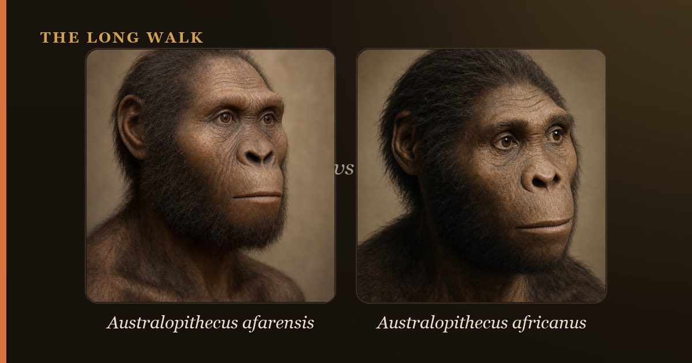

Australopithecus afarensis vs africanus compares the best-known East African and South African australopiths. A. afarensis (about 3.9 to 2.9 million years ago) includes Lucy and the Laetoli footprints. A. africanus (roughly 3 to 2 million years ago, though its dates are less certain) includes the Taung Child and Mrs Ples. Both walked upright, still climbed, and had brains of roughly 400 to 550 cc. Africanus had a rounder skull, a less projecting face and larger cheek teeth. Which, if either, led to Homo is still argued.

On 18 April 1947, Robert Broom and John Robinson set off a blast of dynamite in the Sterkfontein limestone quarry, west of Johannesburg. The explosion split a block of rock and broke a skull in two. Pieced back together, Sts 5 turned out to be the most complete australopith skull then known. Broom called its species Plesianthropus transvaalensis, and the skull became “Mrs Ples”. It is now placed in Australopithecus africanus.
Twenty-seven years later, on 24 November 1974, Donald Johanson and Tom Gray spotted an arm bone on a slope at Hadar in Ethiopia. It led to Lucy, about 40% of one skeleton, lying in sediments between dated volcanic ash layers. The Australopithecus afarensis vs africanus comparison starts here: two famous fossils, recovered in two very different ways.
Ash and caves: why the two records differ
In East Africa, australopith fossils lie in river and lake sediments interleaved with volcanic ash. Crystals in the ash can be dated by the argon-argon method, often to within a few thousand years. That is why Lucy can be dated to about 3.2 million years ago with confidence, and why afarensis can be tracked through time at Hadar, Laetoli and Dikika.
In South Africa, the fossils lie in cave fills called breccias: rubble, soil and bones that fell or washed into underground chambers and were cemented together. Layers can be jumbled, and there is no volcanic ash. Researchers date flowstones, sheets of calcite formed by dripping water, with uranium-lead methods, and bracket the fossils between them. Results have shifted by hundreds of thousands of years as methods improved. Many South African fossils were also gathered by predators: leopards, hyenas and eagles brought bodies into the caves. See the predators that hunted Australopithecus.
So afarensis is a species with a good timeline and a known landscape. Africanus has excellent skulls but a fuzzier timeline. Comparing them means comparing evidence of different quality, and any claim that one species came before the other depends on how far the cave dates can be trusted.
Australopithecus afarensis vs africanus, trait by trait
| Trait | A. afarensis | A. africanus |
|---|---|---|
| Time | ~3.9–2.9 million years ago | ~3–2 million years ago (less certain) |
| Region | Ethiopia, Kenya, Tanzania | South Africa (Taung, Sterkfontein, Makapansgat) |
| Brain | ~400–550 cc | ~400–550 cc |
| Face | Strongly projecting below the nose | Less projecting, shorter |
| Front teeth | Larger canines, small gap in upper row in some | Smaller canines |
| Cheek teeth | Large | Larger, with thicker enamel |
| Famous fossils | Lucy (AL 288-1), the “First Family”, Dikika child | Taung Child, Mrs Ples (Sts 5) |
The skull differences point in two directions at once. Africanus has a rounder braincase and a flatter face, which some researchers read as a step towards Homo. It also has bigger cheek teeth, which others read as a step towards the heavy-chewing Paranthropus robustus that later lived in the same caves. See Paranthropus vs Australopithecus.
Bodies: who climbed more?
Both species walked upright. The Laetoli footprints, made 3.66 million years ago and usually credited to afarensis, show a human-like heel strike and an in-line big toe. Both kept features useful for climbing, such as curved fingers. The Dikika child, a three-year-old afarensis about 3.3 million years old described in 2006, has shoulder blades shaped more like a young gorilla’s, suggesting climbing remained part of life.
In 1998, Henry McHenry and Lee Berger argued that africanus had relatively longer arms and shorter legs than afarensis, making it more ape-like in body despite its more human-like skull. If true, it would be an awkward fit for a direct ancestor of Homo. The samples are small and many limb bones cannot be tied to a single individual, so this is contested.
The Little Foot problem
In 1994, Ron Clarke found four foot bones in a box of Sterkfontein fossils. In 1997, his assistants Stephen Motsumi and Nkwane Molefe found the rest of the skeleton still in the cave wall. Excavating StW 573, “Little Foot”, took about 20 years. It is the most complete australopith skeleton known.
Two arguments surround it. The first is age. In 2015, Darryl Granger and colleagues used cosmogenic nuclide dating to put it at about 3.67 million years, as old as early afarensis. Others argue the flowstones around it show it is closer to 2.2 million years old and that it fell into an older deposit. The second is its species. Clarke assigns it to Australopithecus prometheus, a name Raymond Dart gave to Makapansgat fossils in 1948, and argues that South Africa held two australopith species at once. Most researchers place it in africanus or leave it unassigned. Both questions are unresolved.
Other close relatives
Lucy’s species was not alone. A. anamensis, 4.2 to 3.8 million years ago, is its likely predecessor; a near-complete anamensis skull from Woranso-Mille, Ethiopia, published in 2019, suggests the two overlapped briefly. Kenyanthropus platyops, a flat-faced skull about 3.5 million years old from Lomekwi, Kenya, was named in 2001; some researchers think its flat face is distortion from crushing. A. deyiremeda and A. bahrelghazali add further possible contemporaries. In the mid-Pliocene, the australopith family tree was a bush.
What did they eat?
Chemistry in tooth enamel offers a way to compare the two diets. Plants use one of two main photosynthetic pathways. Trees, shrubs and most fruits are C3 plants, while tropical grasses and sedges are C4 plants. The two leave different carbon isotope signatures in the animals that eat them. In 1999, Matt Sponheimer and Julia Lee-Thorp found that africanus at Makapansgat had eaten a substantial amount of C4 food, from grasses, sedges or animals that ate them. In 2013, Jonathan Wynn and colleagues found the same shift in afarensis at Hadar, whereas older hominins such as Ardipithecus ate mainly C3 foods.
Isotopes cannot tell whether the C4 signal came from roots, seeds, insects or meat. Microscopic wear on afarensis teeth does not suggest hard nuts or seeds were common. Despite their large molars, both species seem to have had varied, flexible diets, able to switch foods as seasons and habitats changed.
Ancestor of whom?
When Johanson and Tim White named afarensis in 1978, with a Laetoli jaw as the type specimen, they argued in 1979 that it was the common ancestor of all later hominins, with africanus on the side branch leading to the robust australopiths. Others have kept africanus as a possible Homo ancestor. The oldest known Homo jaw, from Ledi-Geraru in Ethiopia at about 2.8 million years old, is close in time and place to late afarensis, which favours an East African origin for our genus. It does not rule out africanus as a cousin with a similar evolutionary direction.
For more on each fossil, see Lucy the Australopithecus and the Taung Child.
Lucy and Mrs Ples both sit near the base of the human family tree. Open the interactive timeline to see how the australopiths branch towards Homo and Paranthropus.
Explore the family tree →Australopithecus afarensis vs africanus FAQ
What is the difference between Australopithecus afarensis and africanus?
Afarensis lived in East Africa about 3.9 to 2.9 million years ago and had a more projecting face and larger canines. Africanus lived in South Africa roughly 3 to 2 million years ago and had a rounder skull, shorter face and larger cheek teeth. Their brains were about the same size.
Is Lucy Australopithecus afarensis or africanus?
Lucy (AL 288-1) is Australopithecus afarensis. She was found at Hadar, Ethiopia, in 1974 and lived about 3.2 million years ago.
Who is Mrs Ples?
Mrs Ples (Sts 5) is a nearly complete Australopithecus africanus skull found at Sterkfontein, South Africa, in 1947 by Robert Broom and John Robinson. Some researchers think it belonged to a male.
How old is Little Foot?
A 2015 study dated the Little Foot skeleton (StW 573) to about 3.67 million years ago. Other researchers argue it is closer to 2.2 million years old. The question is unresolved.
Did Australopithecus anamensis evolve into afarensis?
Probably, at least in part. Anamensis (4.2 to 3.8 million years ago) is the likely predecessor, but a 2019 skull suggests the two species may have overlapped for a time.
- Johanson, D. C. & White, T. D. (1979). 'A systematic assessment of early African hominids.' Science 203.
- Alemseged, Z. et al. (2006). 'A juvenile early hominin skeleton from Dikika, Ethiopia.' Nature 443. nature.com
- Granger, D. E. et al. (2015). 'New cosmogenic burial ages for Sterkfontein Member 2 Australopithecus and Member 5 Oldowan.' Nature 522. nature.com
- McHenry, H. M. & Berger, L. R. (1998). 'Body proportions in Australopithecus afarensis and A. africanus and the origin of the genus Homo.' Journal of Human Evolution 35.
- Pickering, R. & Kramers, J. D. (2010). 'Re-appraisal of the stratigraphy and determination of new U-Pb dates for the Sterkfontein hominin site, South Africa.' Journal of Human Evolution 59.
- Haile-Selassie, Y. et al. (2019). 'A 3.8-million-year-old hominin cranium from Woranso-Mille, Ethiopia.' Nature 573. nature.com
- Wynn, J. G. et al. (2013). 'Diet of Australopithecus afarensis from the Pliocene Hadar Formation, Ethiopia.' PNAS 110. doi.org